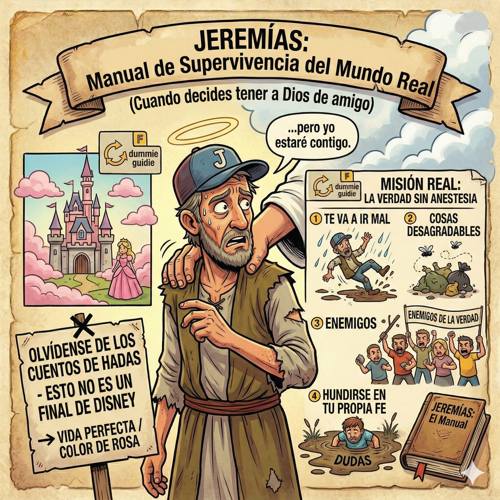

Jeremías: Guía de Supervivencia para Creyentes Cómodos
Olvídate de los cuentos de hadas: esto no es un final de Disney. Un recorrido directo, irreverente pero teológicamente riguroso por las memorias del profeta más incómodo de la Biblia.
Sin anestesia ni maquillaje espiritual: descubre por qué la fe real no es un amuleto mágico de buena suerte, sino una lealtad radical a prueba de fuego.
📖 Leer / Descargar PDF Gratis →
Explorar el Repositorio
Talleres & PPT
Presentaciones completas en PowerPoint y dinámicas estructuradas organizadas por año.
Creación de Guiones Misa
Genera automáticamente el guion completo para cualquier fecha: saludo, municiones, lecturas y oración universal.
Videoteca Pastoral
Explicaciones de la serie "Fe para Dummies" y noticiero del Reino.
Laboratorio de Prompts
Instrucciones y plantillas para generar tus propias imágenes bíblicas personalizadas.
Encíclicas en PDF
Biblioteca de documentos papales clave listos para lectura y descarga directa.
Enlaces de Interés & Comunidad
Canal de YouTube
Serie "Fe para Dummies" con explicaciones sencillas, directas y al grano sobre temas bíblicos y doctrinales.
Página de Facebook
Página de "Fe para Dummies" con publicaciones, reflexiones y novedades del contenido.
Grupo de WhatsApp
Espacio abierto para la comunidad. Comparte material, resuelve dudas y mantente al día.
Biblia Católica Online
Buscador completo y versátil con acceso comparativo a distintas traducciones bíblicas.
Conferencia Episcopal de Chile
Portal oficial con noticias, orientaciones pastorales y documentos vigentes de la Iglesia local.
Banco de Fotos de Alta Calidad
Imágenes libres de derechos ideales para armar afiches, presentaciones y material para la capilla.